How to Take Care of a Pregnant Cat
If you have a pregnant cat at home, you'll need to take extra care to make sure she is getting the attention she needs to safely conceive and rear a litter of kittens. From proper nutrition to a safe environment, you can make sure your expecting feline is ready to carry kittens.
Caring for a Pregnant Cat
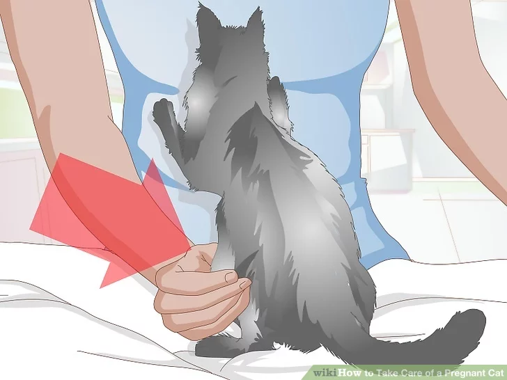
1. Confirm that your cat is pregnant.
Before you start caring for a pregnant cat, you'll want to make sure the cat is pregnant. While people can take simple urine or blood tests at home to confirm pregnancy, this option doesn't exist for cats. However, physical signs do emerge in the earliest stages of pregnancy that can clue you in that your cat may be carrying kittens. The full gestation period of a cat is around 60-70 days, so the process will move along quickly.
- By the third week the cat's nipples will become enlarged and pink. This is referred to as "pinking up."
- By the fourth week, the cat will begin to gain weight, making the pregnancy visible.
- By around the fourth week, your vet should be able to help confirm a pregnancy. An experienced vet can feel around the cat's stomach and feel the kittens. They could also do an ultrasound to detect heartbeats.
- There will also be noticeable behavior changes, particularly in the final weeks. They may appear uncomfortable due to their growing abdomen and meow to seek more attention or affection. As their pregnancy moves along, they'll eat more and spend even more time than usual sleeping.
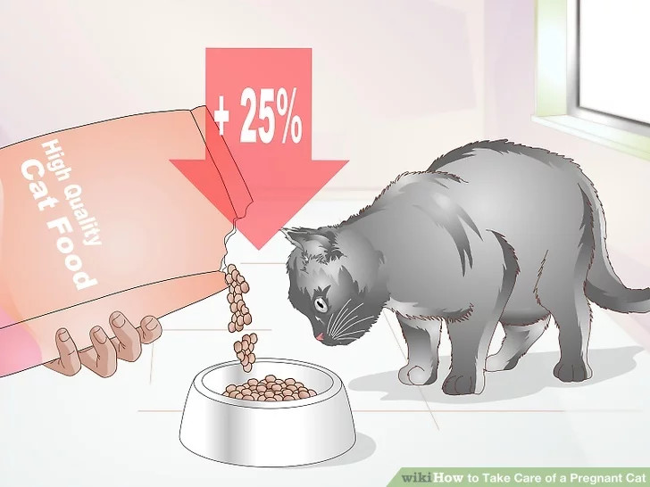
2. Pay close attention to nutrition.
You'll need to make sure your cat is getting proper nutrition for her own health, but also the growing young inside of her. By the start of the sixth week, you should be offering at least 25% more food. Also, make sure the diet is high in protein and calcium are essential to both the kittens and the mother's ability to lactate.
- Introduce a diet designed for kittens to your pregnant cat. These diets are rich in protein and calcium that the cat will need during this time. You should continue to feed them kitten food during their entire pregnancy and after delivery.
- You will not need any special vitamin or mineral mixes, as long as you are feeding them a high quality diet of kitten food. Buy a common and trusted brand to make sure it's up standards.
- Always make sure fresh water is available. This is just as important as any food.
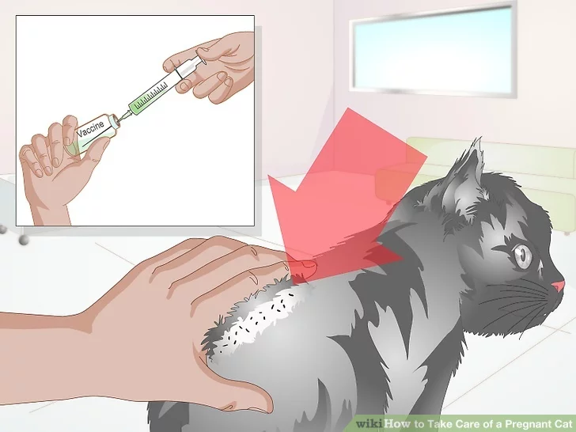
3. Ensure proper health.
Although a healthy cat will rarely have problems introduced by pregnancy, it's important to make sure your cat is healthy enough for the rigors or pregnancy and birthing. Have your cat checked for routine parasites and make sure common vaccinations are up to date. Other more acute problems to look for include:
- Watch with concern if your pregnant cat loses interest in food. This can be an indication of a bigger problem and also cut off necessary nutrients. In some cases a cat may lose interest in food right before giving birth, but it should not last long.
- If your cat is acting distressed and licking her vulva area, this may an indication of a problem. This could mean there is an irritation or a problem the cat is sensing. You should have the cat examined by a vet.
- Look out for any abnormal, bad-smelling vaginal discharge. This can happen during labor or during pregnancy, and in all cases should be followed up by a vet.
- If you notice blood in your cat's urine, or they're squatting with no urine coming out, this can be a sign of uterine infection. This can be painful for your cat and affect the kittens if left untreated.
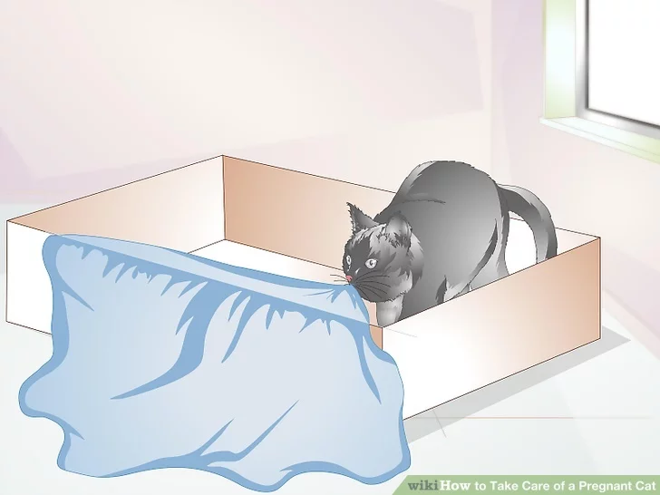
4. Know when the time is near.
If you have been tracking your cat's pregnancy since the beginning, you will have a rough approximation of when the due date is looming. However, if you aren't sure of the timeline, there are other means to recognize that labor may be near. Some of the signs include:
- Your cat is actively looking for secluded areas for nesting.
- Your cat is less active and losing appetite.
- A drop in body temperature.
- Frequent licking of belly and genital area.
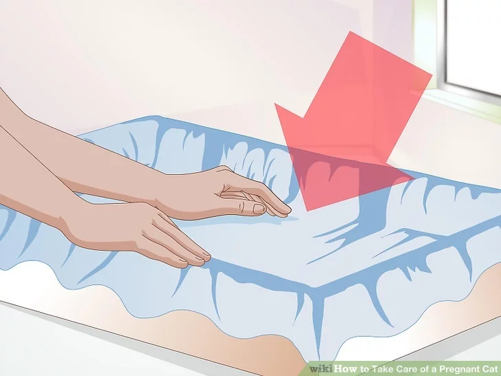
5. Prepare for birth.
It is essential that your cat is comfortable and safe for the birthing process. This includes bringing them indoors so they aren't exposed to harsh elements, but also creating a safe and cozy nesting spot where they can give birth and nurse their kittens. If your cat has a current favorite bed or blankets it lays on, move them to a quiet and safe area away from busy traffic of the house.
Create a nesting area. This can simply be a large cardboard box that is lined with her own bed or sheets, The mom will likely begin to situate herself in a nesting area a day or less before she is ready to give birth. If she chooses her own nesting spot outside of the one you created for her, just accommodate the spot that she chooses by making sure it's safe rather than trying to move her.
Helping the Delivery
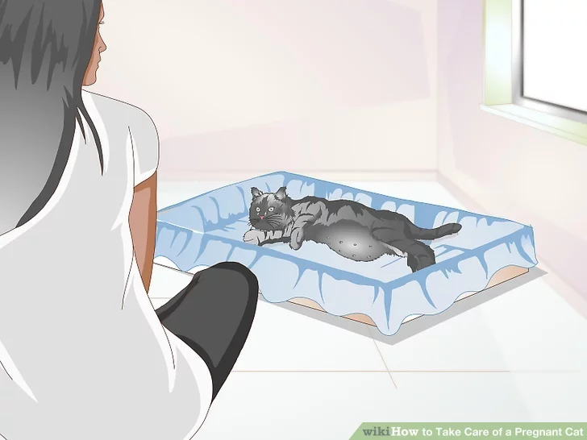
1. Observe and know about the delivery process.
Giving birth is a very natural process for a cat and something that she is built to experience alone. Therefore, you won't need to directly intervene unless there are signs that the pregnancy is going awry. Learn the stages of birthing so you can better be equipped to know what is natural.
- The first stage of labor lasts about 36 hours, and will typically be shorter if the cat has previously had kittens. During this period your cat will visit her nesting spot regularly but also have intermittent contractions with signs of strain. Late in this stage, panting and scratching at the nesting area may increase.
- The second stage will last anywhere from five to thirty minutes for each kitten. There will be stronger contractions and each kitten will be pushed out by active straining of the mom, usually head first. The mom will break the bag and chew the cord herself for each kitten and will require no additional assistance.
- The third and final stage will find the mom passing a placenta membranes and mass for each kitten. The mother cat will eat the placentas so as to hide the evidence that she gave birth. The entire process should happen within four to six hours. If it lasts longer than this, you should call a vet for help.
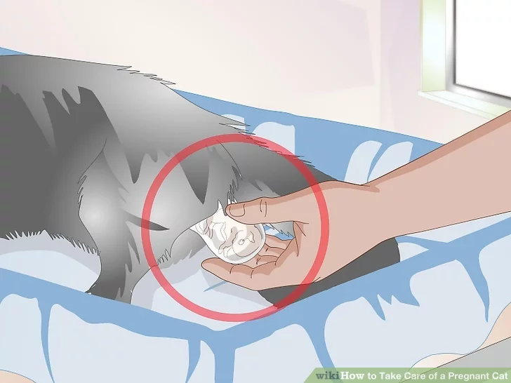
2. Keep an eye out for ways to help.
Although most deliveries happen without any problem, you'll want to know what to watch for and how to act in case of a worst case scenario.
- If a kitten is only partly out and the mother seems to be tired and given up on pushing, you can gently help the kitten ease out but you must be very gentle.
- If the mother does not bite through the cord, you can help by tying off the cord using a clean sewing thread about 3 centimeters from the kitten's body.
- If a mother cat does not clean a kitten you can do so by using a clean kitchen towel and gently wiping the kitten. Make sure to clear its mouth and nose of any liquid that might restrict breathing.
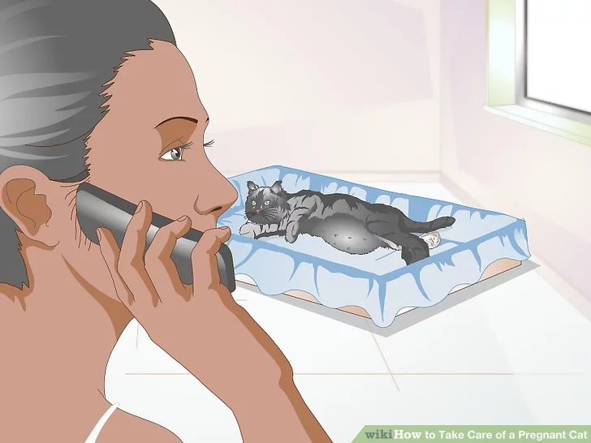
3. Be prepared to call a vet for emergencies.
There are complications that can happen during a pregnancy that should only be handled by a vet. If you notice any of these situations, you should immediately call a vet:
- If the cat is straining for longer than 30 minutes without producing anything. There could be an obstruction preventing a natural birth, putting the mother and kittens in danger.
- If there is a period of an hour or more between the first kitten and subsequent births.
- If the cat suddenly appears weak and unable to continue with labor.
- The presence of excessive blood during birth without a kitten. Greenish afterbirth is common, but without a kitten can be a signal for a problem.
- Keep an eye out for kittens who cannot be dislodged using gentle force. A Caesarean Section may be needed in these cases and a vet should be consulted.
Caring for a Cat After Birth
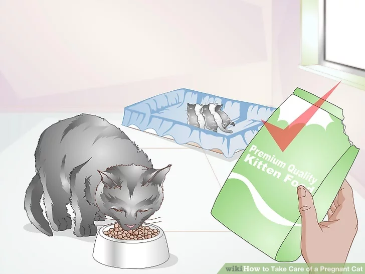
1. Keep monitoring nutrition.
Your cat will now need to care for her kittens. Nursing kittens will require that your cat has access to more food, sometimes as much as double, and continue wth a high protein/calcium diet. Continue to feed your cat a high protein kitten food and always provide access to clean water.
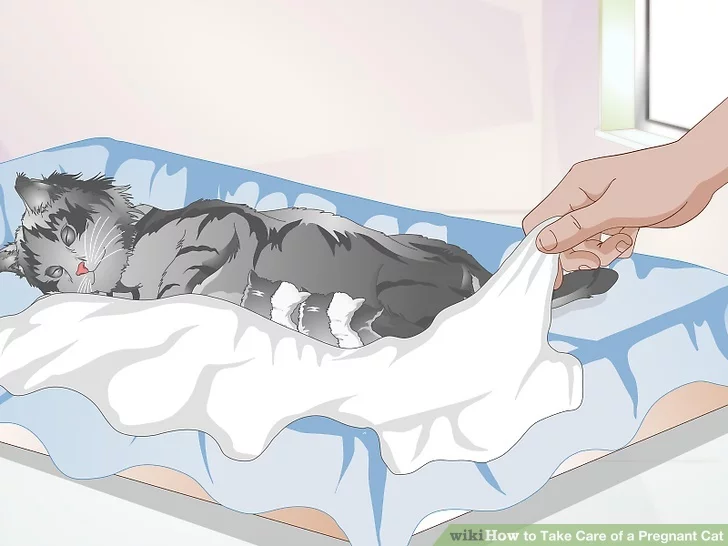
2. Keep the mother cat and kitten warm.
The mother should use her body heat to keep the kittens warm. However, you'll also want to make sure her environment makes this as easy as possible. Keep warm blankets near her and the room temperature high.
- If the mother is being inattentive to the kittens, you can provide a heating pad on low to help keep the babies warm.
- Make sure the kittens and mom remain in a calm place where she will not feel threatened. This can cause a danger to the kittens and the mom.
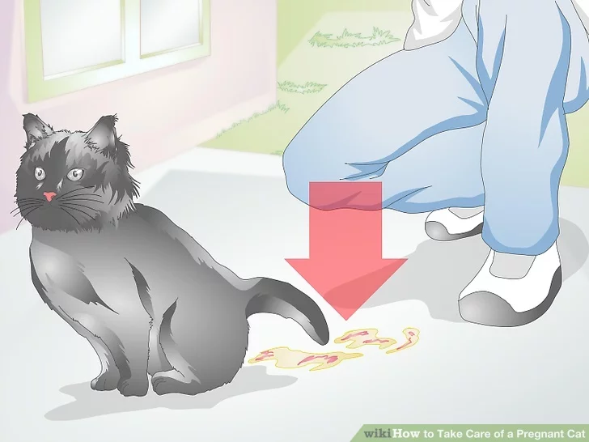
3. Look out for post-birth complications.
Your cat still may have problems after the birthing process is done. If you notice vaginal bleeding, or a prolapsed uterus (a uterus pushed out through the vagina), you should consult your vet. Also look for:
- Look out for atypical behavior, such as ignoring the kittens. She may reject the kittens, or if she feels in enough danger, she may even kill the litter.
- Keep an eye out for inflamed mammary glands. Infected glands will become enlarged, hot to the touch, and may even appear a different color.
- Watch for changes in appetite. If your cat is not getting enough nutrients this can endanger both her and the kittens. If an extended period goes by and your cat is unwilling to eat, take her to a vet.